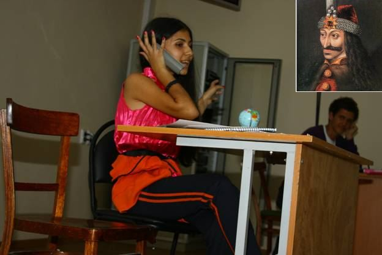

Новая генерация студентов специальности «Туризм» 2010
Рассказывает староста группы Юля ПетроваЮля Петрова – ростовчанка, окончила среднюю школу № 16 деканат геофака сразу распознав в ней лидера, назначил старостой группы

«Это наша группа. Нас 29 человек. Мы преодолели один из самых высоких конкурсов в ЮФУ – более 6 человек на место. Разочаровавшихся в выборе будущей профессии после первого месяца учебы нет. Преподаватели помогли нам укрепится в своем выборе. Это все, что я могу пока сказать».
Наше первое «дело» в стенах университета
«ДЕНЬ ТУРИСТСКОГО МЕНЕДЖЕРА»
27.09.2010
Виктория Арнаутова, маркетолог Центра развития карьеры ЮФУ
Преподаватели. Наше – все!
Начало нашей театральной труппы

Менеджер турагентства 9 группы 1 курса
«Ни туда – ни сюда» Оксана Узунян:
«Трансильвания? Граф Дракула? Где вас носит, граф?
Тут турист к вам. Молоденький, хорошенький….
Будьте спокойны, граф»
«Что? Испугался? Заказывал – поедешь…»